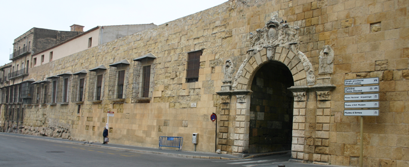

Organizers

Organizing Committee:
- Jordi Fraxedas (Congress Chair), Institut Català de Nanociència i Nanotecnologia, ICN2
- Jordi Arbiol (Congress Chair), ICREA and Institut de Ciència de Materials de Barcelona, ICMAB-CSIC
- Albert Verdaguer, Institut Català de Nanociència i Nanotecnologia, ICN2
- Belén Ballesteros, Institut Català de Nanociència i Nanotecnologia, ICN2
- Judith Oró, Institut de Ciència de Materials de Barcelona, ICMAB-CSIC
- Emma Rossinyol, Universitat Autònoma de Barcelona, UAB
- Mercè Montcusí, SRCiT-URV
Scientific Committee:
- José Juan Calvino Gámez (SME), Universidad de Cádiz, UCA
- José López Carrascosa (SME), Centro Nacional de Biotecnología, CNB-CSIC
- Mikel Valle Rodríguez (SME), Centro de Investigación Cooperativa en Biociencias, CIC Biogune
- Jaume Pons Morro (SME), Universitat de les Illes Balears, UIB
- José R. Castón (SME), Centro Nacional de Biotecnología, CNB-CSIC
- Amada Pulido Regadera (SME), Universidad de Granada, UGR
- Jordi Fraxedas (SME), Institut Català de Nanociència i Nanotecnologia, ICN2
- Jordi Arbiol (SME), ICREA and Institut de Ciència de Materials de Barcelona, ICMAB-CSIC
- António Pedro Alves de Matos (SPMICROS), Centre for Environmental and Marine Studies (CESAM)
- Patrícia Almeida Carvalho (SPMICROS), Instituto Superior Técnico Lisboa
- Lia Ascensão (SPMICROS) , Universidade de Lisboa
- Filipa do Vale (SPMICROS), Universidade Católica de Lisboa
- José Rino (SPMICROS) , Universidade de Lisboa
- Eyal Shimoni (ISM), Weizmann Institute of Science
- Maya Bar-Sadan (ISM), Ben-Gurion University of the Negev
- Amit Kohn (ISM), Ben-Gurion University of the Negev
- Dganit Danino (ISM), Technion Israel Institute of Technology